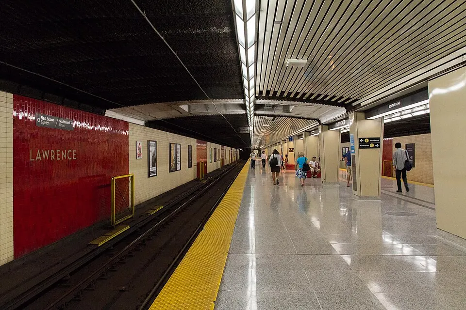

Signal
SignalStation atlas / Lawrence
Station history
Lawrence


Station history
The York Mills extension brought passengers to Lawrence and Yonge. Buses entered an underground terminal and ran on the left to serve a central island.
Two elevators opened a step-free path from the street to the concourse, underground bus terminal and subway platform.